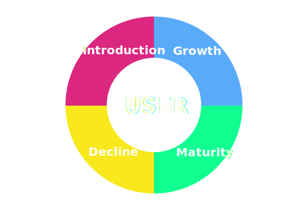

UX Design
What, Why and How
Created by Qiaochu MU
User eXperience
Everything that affects a user’s interaction with that product.
What does this mean?
Best App in the world!
No one buys it...
Confusing & Clumsy!
Then...
Frustration & Resist to Change
Takes the user’s need into account at every stage of the product cycle.
User eXperience Design
is the PROCESS of enhancing user satisfaction by improving the usability, accessibility, and pleasure provided in the interaction between the user and a product.
film
filmmaking
- business need v.s. user needs
- functionality v.s. usability
Why ux matters and you should learn more about it
- you re doing some of this stuff already
- user-centers design is a process—scientific not art
- not that hard,fun & challenging & rewarding
- including visual , but just part of it
but how?
creative design workshop
- Brand Attributes
- Personas
- Goals
- Brand Attributes
- who the customer is
- what their challenges are
- how can you solve them
prototype
- Sketch & Site Map
- Wireframes
- Stylescapes
don't reinvent wheels
testing
- Usability
- User Experience
good usability
- simple and natural dialogue
- speak the user's language
- minimize memory load
- use constructive error message
- support recall
- make clear exits
- make shortcuts
- give feedback
- prevent errors
- thrive for consistency